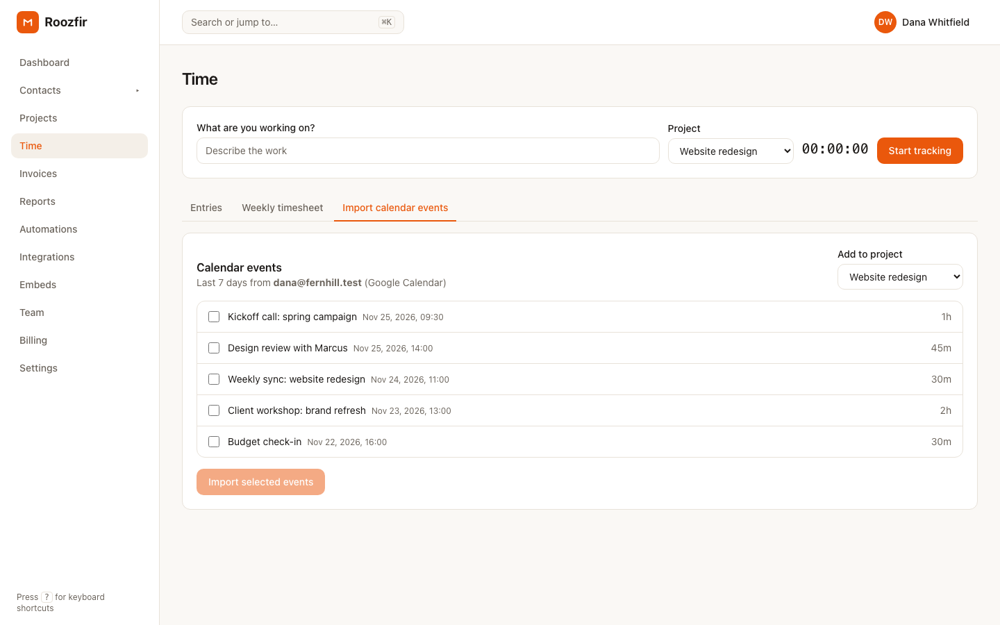
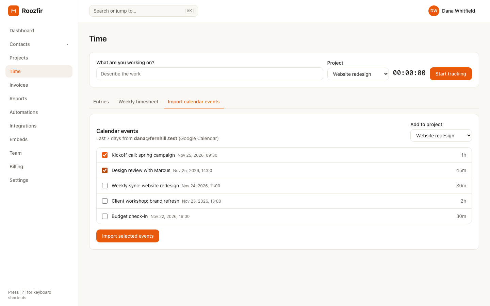
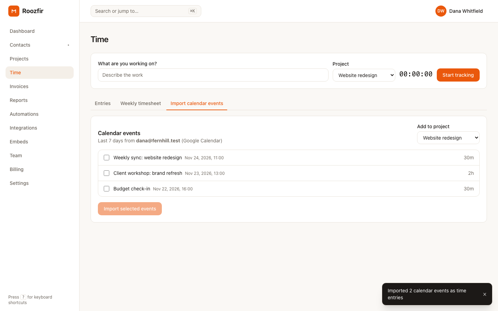

Help Center » Connecting other tools
How to import calendar events as time entries
Once Google Calendar is connected you can pick meetings from the last week and log them as time in one go.
- Open Time in the left-hand menu and click the Import calendar events tab.

The Import calendar events tab with five calendar events from the last seven days - Tick the events you want to log.

Two calendar events ticked - Choose the project in Add to project, then click Import selected events.
- The events are added as time entries with the meeting title as the note. They disappear from this list so you cannot import them twice.

The calendar tab after importing, with the imported events removed from the list
Tip: If you see "Connect Google Calendar first", the calendar is not connected yet. See How to connect Google Calendar.